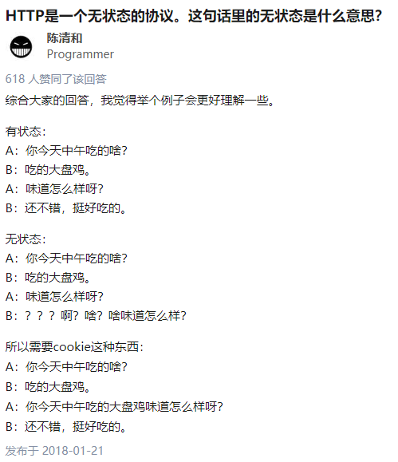
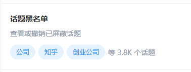

这可能是一篇教你如何写爬虫的博客。
这一篇主要写一下 Cookie 与 Session，现在的大多数网站是使用这些来进行身份认证的。
Cookie
Cookie 是一个请求首部，其中含有先前由服务器通过 Set-Cookie 首部投放并存储到客户端的 HTTP cookies。
Set-Cookie 最常规的用法是这样的：Set-Cookie: <cookie-name>=<cookie-value>。浏览器会将这个键值对字符串添加到 Cookies 中，后续的请求会附带这个字符串。
Cookie 的用法
Set-Cookie：
1 | curl 'http://localhost/6/set-cookie.php' -v |
我们可以在后续的请求中带上 Cookie：
1 | curl 'http://localhost/6/get-cookie.php' -b 'Hello=World' -v |
可以看到，返回的结果里有我们的 Cookie。
Cookie 有什么用处呢？比如 V2EX，每次访问都能自动打开上次离开时的节点，就是用 Cookie 实现的。
当然，Cookie 可不止这些用途，还有一种叫 Session 的技术，也和 Cookie 息息相关。
Session
HTTP 是无状态的协议，关于无状态，知乎上有个回答挺有意思的：

那只用 Cookie 来维持状态怎么样呢？在不考虑安全的前提下，我们假设只用 Cookie 来传输上下文信息，应用场景就是知乎：
1 | 知乎：你想看什么 |
这样几次之后，屏蔽词怕是就要比网页本身占用的空间还大了。如果每次都要把全部的屏蔽词传到服务器，那么像我这样的重度屏蔽用户，怕是每打开一个页面，都要加载五分钟吧。

（另外其实知乎的屏蔽功能是假的，参照我的这个回答。3.8k 屏蔽话题的我的知乎首页全是我已经屏蔽了的内容。）
那要怎么解决这个问题呢？我们考虑这样：
1 | 我：我是 MeiK，我想看“程序”相关的内容 |
每次都将我们的身份告诉服务器，让服务器帮我们记住我们的喜好与屏蔽词等信息，这样就可以解决这个问题了。
在服务器端维持用户状态的技术就是 Session，一般来说，Session 会依赖 Cookie 中的某项来判断用户的身份。比如 J2EE 框架的 JSESSIONID、PHP 的 PHPSESSID， QQ 的 skey，以及其他各种框架的 sessionid 等（如果是一些前后端分离的框架的话，可能会用到 Authentication 标头）。
Session 的用法
我们使用简单的 PHP 程序来测试一下 Session 的使用。
首先创建一个 Session：
1 | curl 'http://localhost/6/create-session.php?username=MeiK' -v |
可以看到，响应中用 Set-Cookie 设置了 Cookie，然后我们来查看一下刚才设置的 Session：
1 | curl 'http://localhost/6/session-info.php' -b 'PHPSESSID=r5675oom5o8ufsgt13j2hg8jdn' |
虽然我们仅提供了 PHPSESSID，而没有提供用户名，但服务器还是能知道我们的身份。
我们再尝试修改 Session 中的值：
1 | $ curl 'http://localhost/6/add-score.php' -b 'PHPSESSID=r5675oom5o8ufsgt13j2hg8jdn' |
可见，其实 Session 就对应了用户的登陆状态，如果 Session 泄露了的话，后果是相当严重的。如果在生活中不小心泄露了 Cookie，需要立即退出登陆以确保安全。